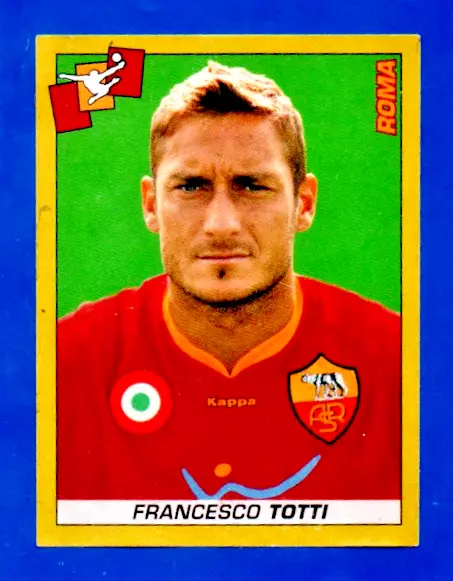

Francesco Totti

Francesco Totti è stato il simbolo della Roma, capitano per oltre 20 anni e vincitore dello Scudetto nel 2001.
Francesco Totti è stato il simbolo della Roma, capitano per oltre 20 anni e vincitore dello Scudetto nel 2001.